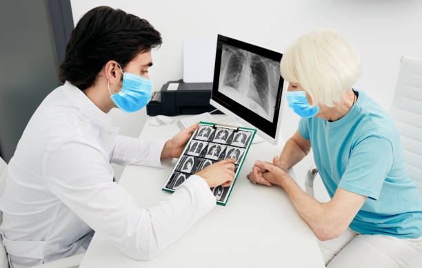
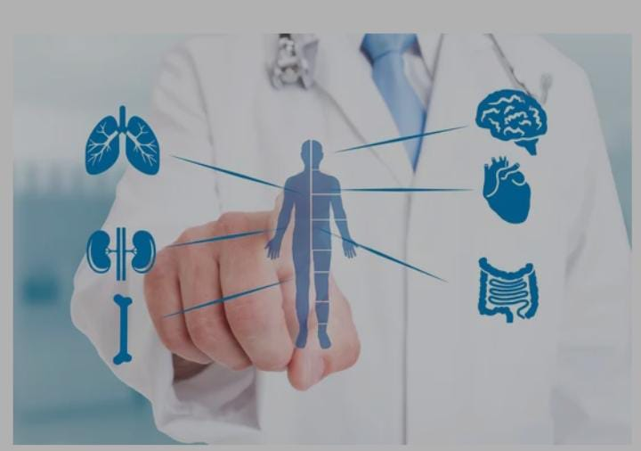
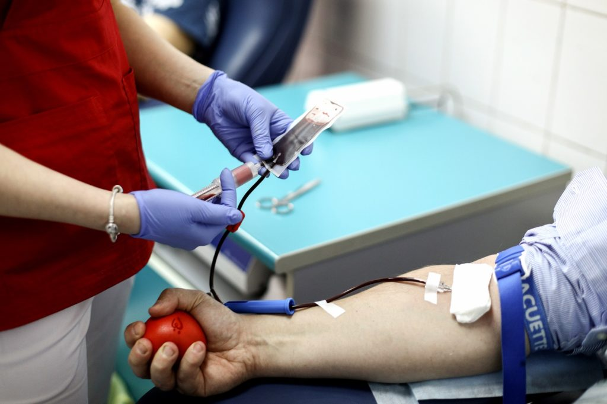

General Care
General or Internal medicine is a specialty which deals with all the medical problems of a patient in a holistic manner. We have a team of physicians who have
the experience of managing all medical problems both emergency and non-emergencies.In the current health care scenario there is a need to listen to patients problems,
extract good clinical history and perform a thorough clinical examination of the patients. Our team of physicians approach any clinical problem with such precision
and when required they discuss the clinical issues with relevant specialist so that best possible treatment is offered to our patients.
Child Care
I believe that hospitals should provide day-care for their employees' children. There is a documented need for good day-care. Child-care
The present concept of health care of child focuses on prevention of illness and promotion of health rather than treatment of illnesses alone. Present focus of pediatrics is shifting from traditional to process oriented one that is based on sound scientific rationale.
There is a documented need for good day-care. Child-care
The present concept of health care of child focuses on prevention of illness and promotion of health rather than treatment of illnesses alone. Present focus of pediatrics is shifting from traditional to process oriented one that is based on sound scientific rationale.
Brain Care
Neurology is the branch of medicine concerned with the study and treatment of disorders of the nervous system.
A neurological examination assesses motor and sensory skills, hearing and speech, vision, coordination, and balance. It may also test mental status, mood, and behavior.
Numbness or tingling in the hands and feet.Feeling like you're wearing a tight glove or sock.Muscle weakness, especially in your arms or legs.Regularly dropping objects that you're holding.Sharp pains in your hands, arms, legs, or feet.A buzzing sensation that feels like a mild electrical shock.
Pulmonary Care
Pulmonology is a medical specialty that focuses on prevention, diagnosis, and treatment of diseases involving the lungs and respiratory tract. Pulmonologists at
Citizens Specialty Hospital works in collaboration with highly specialized medical and surgical experts to provide holistic care for people of all ages.
Our dedicated team of Pulmonologists helps in the treatment of various Lung Disorders including breathing problems due to Allergy & Asthma, and conditions such as
Chronic Obstructive Pulmonary Disorder, Interstitial Lung Disease, Occupational Lung Diseases and more.

ENT Care
The department offers a comprehensive range of service catering to the diagnosis and treatment of all ENT, Head & Neck disorders. We are also the first
department in the state to combine the services of Head & Neck Onco-surgery with reconstruction and ENT under one roof.
Keeping pace with the advances made in the field we at Citizens Specialty Hospital employ the latest technologies in the diagnosis and treatment. A team of dedicated
clinicians work closely with other medical and surgical specialists in the diagnosis and treatment of all types of head and neck disorders. The team adopts
multidisciplinary approach to provide up-to-the-minute surgical and medical care for patients.
Eye Care
Eye problems can be easily prevented if you practice essential eye care habits everyday. Surprisingly, they are very practical and easy to accomplish yet they tend to be the most neglected.
To maintain your eye health and to keep your vision sharp, here are twelve things that should be part of your daily routine.
An ophthalmologist is qualified to deliver total eye care, meaning vision services, eye examinations, medical and surgical eye care, and diagnosis and treatment of disease and visual complications that are caused by other conditions, like diabetes
An optician can either be a dispensing optician or an ophthalmic optician (see below "Optometrist"). Unlike an ophthalmologist or an optometrist, a dispensing optician is not qualified to test sight. The term 'optician' is loosely used in the UK to describe an individual who deals with all things eye-care related
Bone & Joint Care
An advanced Orthopedics program offering comprehensive care
Orthopedics is a medical specialty which focuses on injuries and diseases of the body's musculoskeletal system for patients of all ages. This complex system includes
206 bones and more than 350 joints besides other elements such as ligaments, tendons, muscles, and nerves that allows you to move, work, and be active.
Orthopedics involves diagnosis of any kind of injury or disorder; medication, surgery or any other form of treatment; rehabilitation through exercises or physical
therapy to restore movement, strength and function; and preventive care with regards to the muscular skeletal system.
Orthopedic Emergency Supported by BONE.
Mental Health Care
In general, however, professional help might be needed if you experience: Marked changes in personality, eating or sleeping patterns. An inability to cope with problems or daily activities. Feeling of disconnection or withdrawal from normal activities.
mood disorders (such as depression or bipolar disorder) anxiety disorders. personality disorders. psychotic disorders (such as schizophrenia)
Psychiatry is a medical field concerned with the diagnosis, treatment and prevention of mental health conditions. A doctor who works in psychiatry is called a psychiatrist
Internal Medicine Care
Internal medicine or general internal medicine (in Commonwealth nations) is the medical specialty dealing with the prevention, diagnosis, and treatment of internal diseases. Doctors specializing in internal medicine are called internists, or physicians (without a modifier) in Commonwealth nations. Internists are skilled in the management of patients who have undifferentiated or multi-system disease processes. Internists care for hospitalized and ambulatory patients and may play a major role in teaching and research.
Internal medicine and family medicine are often confused as equivalent in the Commonwealth nations (see below).Because internal medicine patients are often seriously ill or require complex investigations, internists do much of their work in hospitals. Internists often have subspecialty interests in diseases affecting particular organs or organ systems.

Women Care
The broad mandate of the Ministry is to have holistic development of Women and Children. As a nodal Ministry for the advancement of women and children, the Ministry formulates plans, policies and programmes; enacts/ amends legislation, guides and coordinates the efforts of both governmental and non-governmental organisations working in the field of Women and Child Development. Besides, playing its nodal role, the Ministry implements certain innovative programmes for women and children.
These programmes cover welfare and support services, training for employment and income generation, awareness generation and gender sensitization.
These programmes play a supplementary and complementary role to the other general developmental programmes in the sectors of health, education, rural development etc.
All these efforts are directed to ensure that women are empowered both economically and socially and thus become equal partners in national development along with men.
Diabetes Care
The most common specialists in the field of diabetes are endocrinologists. Endocrinologists specialize in hormonal issues and the glands that produce these hormones. Diabetes develops when the pancreas no longer produces insulin in the way it should do. The pancreas is a gland, and insulin is a hormone.
You should go to see an endocrinologist when you're having problems controlling your diabetes. Your primary care physician may also recommend that you see a specialist for managing diabetes.
A blood sugar level less than 140 mg/dL (7.8 mmol/L) is normal. A reading of more than 200 mg/dL (11.1 mmol/L) after two hours indicates diabetes. A reading between 140 and 199 mg/dL (7.8 mmol/L and 11.0 mmol/L) indicates prediabetes.
A reading above 300 mg/dL can be dangerous, according to the University of Michigan, which recommends immediately informing your doctor if you have two or more readings of 300 mg/dL in a row. In severe cases, very high blood sugar levels (well above 300 mg/dL) can result in coma.
Blood Care
Blood tests can be used for many different things, including to check cholesterol and blood glucose levels. These help monitor your risk of heart and circulatory diseases and diabetes, or how your condition is being managed. Tests for different chemicals and proteins can indicate how your liver or kidneys are working.
CBC (Complete Blood Count)
Complete blood count (CBC) is one of the most commonly ordered tests, and for good reason. Your blood cells can tell a lot about your health. CBC lets you and your doctor know when you have issues with infections or inflammation, but it will also signal when your diet is not balanced.
Lab results are often shown as a set of numbers known as a reference range.

Neurology Care
At the Neuro Science department, we provide the highest level of expertise in all disciplines of neurology and neuro surgery through an integrated team of
neurologists and neuro surgeons dedicated to delivering highest level of patient care. We offer comprehensive evaluation and therapeutic services to a wide range of
conditions like Stroke, Brain Hemorrhage, Backache, Spinal Disorders, Neuro-Oncology, Epilepsy and other neurological ailments.
Stroke:
Stroke is "Brain attack". It occurs when the blood supply to the brain is interrupted and the brain tissues are deprived of oxygen and other nutrients causing brain
cells to die.
Andrology Care
Andrology is a name for the medical specialty that deals with male health, particularly relating to the problems of the male reproductive system and urological problems that are unique to men
Andrology is a subspecialty of Urology which involves treatment of various conditions causing male infertility and male sexual dysfunction. In short, Andrology deals with male reproductive health, a counterpart to Gynaecology.
TDL's Andrology division focuses on the single most important factor determining a man's fertility potential the production of healthy sperm. A semen analysis, which provides information about sperm count, motility and morphology, has classically been used as the marker of male fertility potential.
Gynaecology Care
As a nodal Ministry for the advancement of women and children, the Ministry formulates plans, policies and programmes; enacts/ amends legislation, guides and coordinates the efforts of both governmental and non-governmental organisations working in the field of Women and Child Development. Besides, playing its nodal role, the Ministry implements certain innovative programmes for women and children.
These programmes cover welfare and support services, training for employment and income generation, awareness generation and gender sensitization.
These programmes play a supplementary and complementary role to the other general developmental programmes in the sectors of health, education, rural development etc.
All these efforts are directed to ensure that women are empowered both economically and socially and thus become equal partners in national development along with men.
Digestive Care
Diseases affecting the gastrointestinal tract, which include the organs from mouth into anus, along the alimentary canal, are the focus of this speciality. Physicians practicing in this field are called gastroenterologists.
Your doctor will press down on the skin around your belly. They'll listen for odd bowel sounds and feel for any masses or tenderness. They may ask you to take deep breaths or cough during your exam. They might also put a finger into your rectum to feel for any bulges or masses, and to check the muscle tone.
Diarrhea, vomiting, nausea, and stomach pain are the most common signs of a stomach virus. Although it's called the stomach flu, this virus has nothing to do with the flu. These symptoms are caused by other viruses, most commonly norovirus. 7 Fever, headache, and body aches are other possible symptoms.
Copyright © Malar Hospital 2022. All Rights Reserved.


 Malar Hospital
Malar Hospital